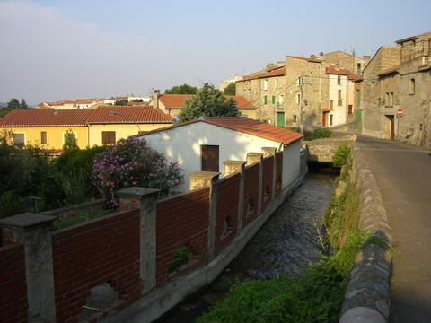
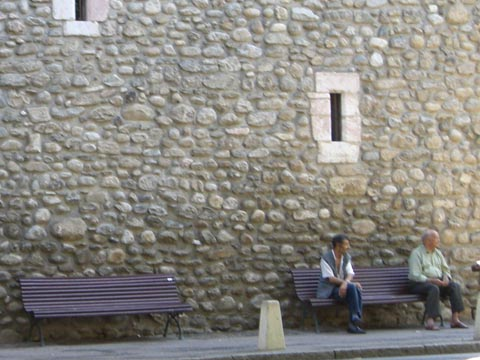
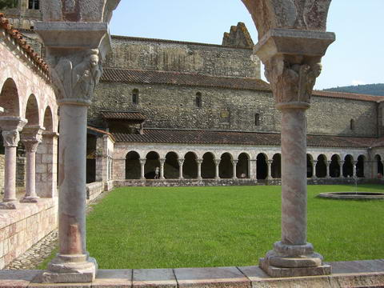
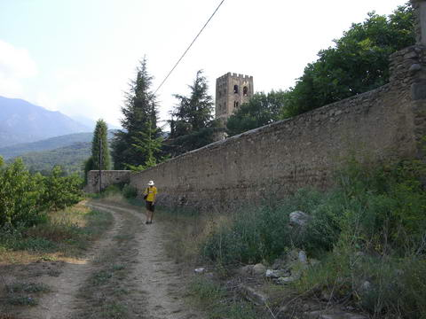
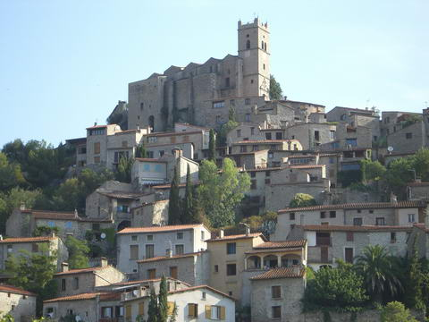
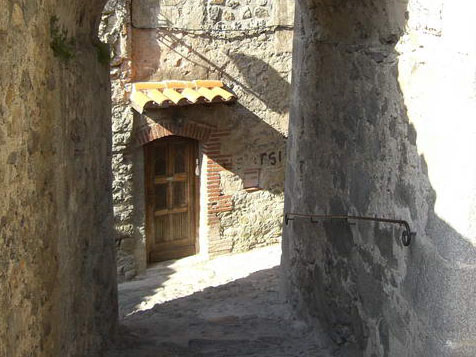
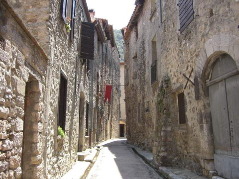
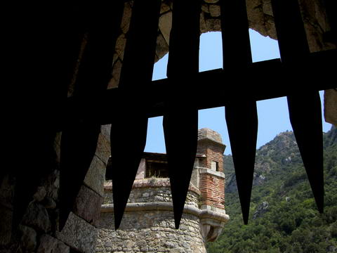
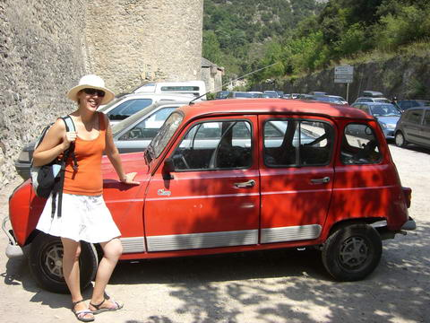

france
prades

our stopover in france this time was in the small southern town of prades

not a whole lot was going on in prades, which was sort of why we chose to go there

a short walk from the town was the abbaye saint michel de cuixa

out the back was a nice little orchid. how quaint!
eus

another reason to visit prades was that it was down the road from eus, one of frances "most beautiful villages"

the windy streets up and down the hill were quite cool
villafranche

a bit further inland on the bus was the village of villafranche

it was quite unique in that it was basically a fortress enclosed on all sides but huge walls and scary spikey things

ren was keen to take this car. ren's renault!